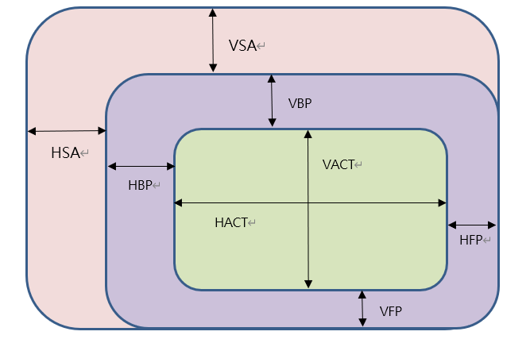
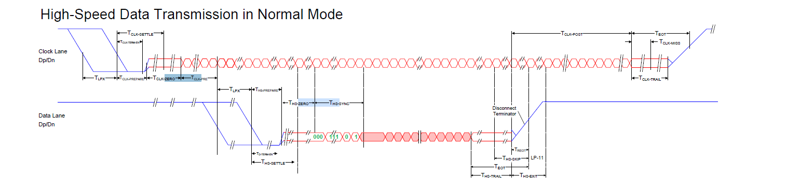
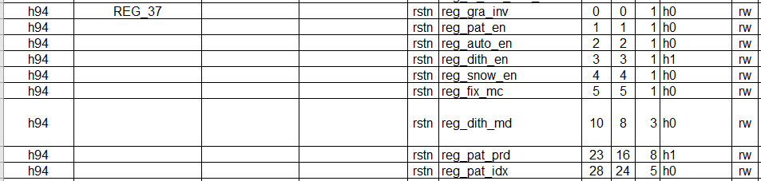

4. MIPI DSI(SDK V6.3.4开始)¶
概述
Display Serial Interface（DSI）接口是移动行业处理器接口联盟 （Mobile Industry Processor Interface alliance, MIPI联盟） 定义的一种高速串行接口，主要用于处理器和显示模块之间的连接。
本章介绍如何在 CVITEK 处理器解决方案上开发调试 MIPI LCD 屏， 以帮助客户有序快速开发 MIPI LCD 业务。
4.1. 环境准备¶
4.1.1. MIPI DSI 屏幕接口介绍¶
MIPI DSI 屏幕一般有以下几种信号，如图所示。
MIPI 时钟线（CLK）
MIPI 数据线（DATA），最大为 4 Lane（仅可以为 1/2/4 Lane）
背光控制信号（BACKLIGHT）
复位引脚（RESET）
Panel 电源供电（POWER）
MIPI DSI 接口连线示意图

4.1.2. 硬件连线确认¶
检查硬件连线，确认无异常。具体有些引脚差异，需对照屏幕厂商提供的规格书及 电路原理图确认。
4.2. PanelSupportList 框架概览¶
SDK 通过 PanelSupportList 仓库统一管理所有屏参头文件，
u-boot、cvi_mpi 和 AliOS 共用同一套屏参数据，但配置方式各有不同。
框架结构如下：
屏参头文件：全部放在
PanelSupportList/panels/目录下，按规范命名。
三种系统的屏参引用方式：
u-boot / cvi_alios：通过
PanelSupportList/cvi_panels.h汇总入口， 使用CONFIG_宏在编译期选定唯一一块屏。cvi_panels.h只支持单选， 不能同时使能多块屏。cvi_mpi：在
sample_panel.h中直接#include所有屏参头文件， 运行时通过--panel=命令行参数动态选择，可同时编译进所有屏参。
对接一块新 MIPI 屏的基本步骤：
在
PanelSupportList/panels/下编写规范命名的屏参头文件。根据目标系统选择注册方式（见下文）。
配置使能并构建。
4.3. 配置 MIPI 屏（统一流程）¶
4.3.1. 第 1 步：编写屏参头文件¶
4.3.1.1. 命名规范¶
头文件统一放在 PanelSupportList/panels/ 下，命名格式：
dsi_{driveric}_{wxh}_{moduleid}_{lanenum}lane_{fps}fps[_vN].h
driveric：驱动 IC，小写，例如hx8394。wxh：有效分辨率，例如720x1280。moduleid：屏幕模组 ID；不确定时用NULL。lanenum：物理 DSI lane 数，例如4lane。fps：目标刷新率，例如60fps。_vN（可选）：当同一 IC + 分辨率 + lane + fps 仍需区分不同硬件版本时使用。
示例：
dsi_hx8394_720x1280_NULL_4lane_60fps.h
dsi_st7701_480x640_NULL_2lane_60fps.h
4.3.1.2. 头文件内容模板¶
每个头文件必须包含 panel_platform.h（提供平台适配层和 DSI_CMD 等宏），
然后按顺序定义 timing 宏、设备配置、HS timing 和初始化命令。
以下是一个完整的范例：
#include "panel_platform.h"
/* ---- Timing 宏 ---- */
#define DSI_HX8394_720X1280_NULL_4LANE_60FPS_VACT 1280
#define DSI_HX8394_720X1280_NULL_4LANE_60FPS_VSA 16
#define DSI_HX8394_720X1280_NULL_4LANE_60FPS_VBP 4
#define DSI_HX8394_720X1280_NULL_4LANE_60FPS_VFP 6
#define DSI_HX8394_720X1280_NULL_4LANE_60FPS_HACT 720
#define DSI_HX8394_720X1280_NULL_4LANE_60FPS_HSA 64
#define DSI_HX8394_720X1280_NULL_4LANE_60FPS_HBP 36
#define DSI_HX8394_720X1280_NULL_4LANE_60FPS_HFP 128
#define DSI_HX8394_720X1280_NULL_4LANE_60FPS_FPS 60
/* ---- MIPI Tx 设备配置 ---- */
struct combo_dev_cfg_s dev_cfg_dsi_hx8394_720x1280_NULL_4lane_60fps = {
.devno = 0,
.lane_id = {MIPI_TX_LANE_0, MIPI_TX_LANE_1, MIPI_TX_LANE_CLK,
MIPI_TX_LANE_2, MIPI_TX_LANE_3},
.lane_pn_swap = {true, true, true, true, true},
.output_mode = OUTPUT_MODE_DSI_VIDEO,
.video_mode = BURST_MODE,
.output_format = OUT_FORMAT_RGB_24_BIT,
.sync_info = {
.vid_hsa_pixels = DSI_HX8394_720X1280_NULL_4LANE_60FPS_HSA,
.vid_hbp_pixels = DSI_HX8394_720X1280_NULL_4LANE_60FPS_HBP,
.vid_hfp_pixels = DSI_HX8394_720X1280_NULL_4LANE_60FPS_HFP,
.vid_hline_pixels = DSI_HX8394_720X1280_NULL_4LANE_60FPS_HACT,
.vid_vsa_lines = DSI_HX8394_720X1280_NULL_4LANE_60FPS_VSA,
.vid_vbp_lines = DSI_HX8394_720X1280_NULL_4LANE_60FPS_VBP,
.vid_vfp_lines = DSI_HX8394_720X1280_NULL_4LANE_60FPS_VFP,
.vid_active_lines = DSI_HX8394_720X1280_NULL_4LANE_60FPS_VACT,
.vid_vsa_pos_polarity = false,
.vid_hsa_pos_polarity = true,
},
.pixel_clk = PIXEL_CLK(DSI_HX8394_720X1280_NULL_4LANE_60FPS),
};
/* ---- HS timing 配置 ---- */
struct hs_settle_s hs_timing_cfg_dsi_hx8394_720x1280_NULL_4lane_60fps = {
.prepare = 6, .zero = 32, .trail = 1
};
/* ---- 初始化命令 ---- */
struct dsc_instr dsi_init_cmds_dsi_hx8394_720x1280_NULL_4lane_60fps[] = {
DSI_CMD(0, 0xb9, 0xff, 0x83, 0x94),
DSI_CMD(0, 0xb1, 0x50, 0x15, 0x75, 0x09, 0x32, 0x44, 0x71, 0x31,
0x4d, 0x2f, 0x56, 0x73, 0x02, 0x02),
/* ... 更多初始化命令 ... */
DSI_CMD(120, 0x11), /* Sleep Out, delay 120ms */
DSI_CMD(20, 0x29), /* Display On, delay 20ms */
};
4.3.1.3. 关键数据结构的说明¶
combo_dev_cfg_s（MIPI Tx 设备属性）
struct combo_dev_cfg_s {
unsigned int devno;
enum mipi_tx_lane_id lane_id[LANE_MAX_NUM];
enum output_mode_e output_mode;
enum video_mode_e video_mode;
enum output_format_e output_format;
struct sync_info_s sync_info;
unsigned int pixel_clk;
bool lane_pn_swap[LANE_MAX_NUM];
};
成员名称 |
描述 |
|---|---|
devno |
MIPI Tx 设备号，默认 0 |
lane_id |
主控端和屏端 Lane 号的对应关系，未使用的 Lane 填 -1 即可。 共 5 个成员，依序分别代表主控端的 MIPI_TX_0 ~ MIPI_TX_4， 实际填写的内容需要根据对应到屏端的 MIPI lane 号。 例如，第一个成员是主控 MIPI_TX_0，查电路原理图对应到屏端的 MIPI lane3， 就填写为 MIPI_TX_LANE_3。 对应关系不正确，将导致屏幕无法点亮。 |
output_mode |
MIPI Tx 输出模式，默认 OUTPUT_MODE_DSI_VIDEO |
video_mode |
MIPI Tx 视频模式，默认 BURST_MODE |
output_format |
MIPI Tx 输出格式，默认 OUT_FORMAT_RGB_24_BIT |
sync_info |
MIPI Tx 设备的同步信息（详见下方） |
pixel_clk |
像素时钟，单位为 KHz。 使用 #define PIXEL_CLK(x) \
((x##_VACT + x##_VSA + x##_VBP + x##_VFP) \
* (x##_HACT + x##_HSA + x##_HBP + x##_HFP) * x##_FPS / 1000)
lane_clk 根据 pixel_clk 反推，换算公式： lane_clk = pixel_clk × 24 / 4 / 2（24 表示 RGB888 每个 pixel 占 24 bits， 4 表示使用了 4 条 Data Lane，2 表示 MIPI clk 是双边沿触发） |
lane_pn_swap |
MIPI Tx 的 Lane P/N 极是否交换 true：交换 false：不交换 |
sync_info_s（MIPI Tx 设备同步信息）
struct sync_info_s {
unsigned short vid_hsa_pixels;
unsigned short vid_hbp_pixels;
unsigned short vid_hfp_pixels;
unsigned short vid_hline_pixels;
unsigned short vid_vsa_lines;
unsigned short vid_vbp_lines;
unsigned short vid_vfp_lines;
unsigned short vid_active_lines;
bool vid_vsa_pos_polarity;
bool vid_hsa_pos_polarity;
};
成员名称 |
描述 |
|---|---|
vid_hsa_pixels |
水平同步脉冲（HSA），单位为像素 |
vid_hbp_pixels |
水平消隐后肩（HBP），单位为像素 |
vid_hfp_pixels |
水平消隐前肩（HFP），单位为像素 |
vid_hline_pixels |
水平有效区（HACT），单位为像素 |
vid_vsa_lines |
垂直同步脉冲（VSA），单位为行 |
vid_vbp_lines |
垂直消隐后肩（VBP），单位为行 |
vid_vfp_lines |
垂直消隐前肩（VFP），单位为行 |
vid_active_lines |
垂直有效区（VACT），单位为行 |
vid_vsa_pos_polarity |
垂直有效信号的极性，false 为高有效，true 为低有效 |
vid_hsa_pos_polarity |
水平有效信号的极性，false 为高有效，true 为低有效 |
MIPI DSI 协议下 MIPI 像素区域示意图

建议先将屏厂规格书中的 timing 参数定义为宏（使用头文件 stem 的大写形式作为前缀），
再在 sync_info 中引用，避免裸常量分散在各处难以维护。
hs_settle_s（MIPI Tx HS timing）
struct hs_settle_s {
unsigned char prepare;
unsigned char zero;
unsigned char trail;
};
成员名称 |
描述 |
|---|---|
prepare |
MIPI Tx prepare 信号，默认值 6 |
zero |
MIPI Tx zero 信号，默认值 32 |
trail |
MIPI Tx trail 信号，默认值 1 |
MIPI Tx 时序图
{kind=link}

4.3.1.4. 初始化命令¶
屏幕初始化命令通过 DSI_CMD() 宏定义，不需要手动写 data_type 和 size。
宏会自动按数据字节数选择 data type：
1 字节 →
0x05（只有寄存器地址，无数据）2 字节 →
0x15（寄存器地址 + 1 个数据）3 字节及以上 →
0x29（寄存器地址 + 2 个及以上数据）
/* 第一个参数始终是 delay（发送后延时，单位 ms），后面是寄存器地址 + 数据 */
#define DSI_CMD(delay_ms, ...) \
{.delay = (delay_ms), \
.data_type = ..., \
.size = sizeof(...), \
.data = (CVI_U8[]){__VA_ARGS__} }
使用示例：
struct dsc_instr dsi_init_cmds_dsi_hx8394_720x1280_NULL_4lane_60fps[] = {
DSI_CMD(0, 0xb9, 0xff, 0x83, 0x94), /* 多字节，自动选 0x29 */
DSI_CMD(0, 0x36, 0x02), /* 2 字节，自动选 0x15 */
DSI_CMD(120, 0x11), /* Sleep Out，1 字节 → 0x05 */
DSI_CMD(20, 0x29), /* Display On */
};
如果屏厂指定了不同的 data type（如 0x23、0x39），使用 DSI_CMD_TYPE 显式指定：
DSI_CMD_TYPE(0, 0x39, 0xff, 0x77, 0x01, 0x00),
初始化序列由屏厂商提供，具体指令含义请在屏厂规格书或 Driver IC Datasheet 中查找。
4.3.2. 第 2 步：注册屏参头文件¶
根据目标系统选择对应的注册方式。
4.3.2.1. u-boot / cvi_alios 注册方式（cvi_panels.h）¶
在 PanelSupportList/cvi_panels.h 中增加一个 #elif 块。
cvi_panels.h 是 u-boot 和 cvi_alios 共用的编译期单选入口，
通过 CONFIG_ 宏决定使用哪一块屏，不能同时选择多块屏。
#elif CONFIG_DSI_HX8394_720X1280_NULL_4LANE_60FPS
#include "panels/dsi_hx8394_720x1280_NULL_4lane_60fps.h"
static struct panel_desc_s panel_desc = {
.panel_name = "HX8394-720x1280-NULL-4lane-60fps",
.dev_cfg = &dev_cfg_dsi_hx8394_720x1280_NULL_4lane_60fps,
.hs_timing_cfg = &hs_timing_cfg_dsi_hx8394_720x1280_NULL_4lane_60fps,
.dsi_init_cmds = dsi_init_cmds_dsi_hx8394_720x1280_NULL_4lane_60fps,
.dsi_init_cmds_size = ARRAY_SIZE(dsi_init_cmds_dsi_hx8394_720x1280_NULL_4lane_60fps),
};
说明：
CONFIG_宏由头文件 stem 大写派生（dsi_hx8394_720x1280_NULL_4lane_60fps→CONFIG_DSI_HX8394_720X1280_NULL_4LANE_60FPS）。不再使用旧式
MIPI_PANEL_HX8394等别名，统一使用CONFIG_宏。
4.3.2.2. cvi_mpi 注册方式（sample_panel.h + sample_panel.c）¶
cvi_mpi 不使用 cvi_panels.h，而是在 sample_panel.h 中直接 include
所有屏参头文件，运行时通过命令行参数选择。
在
sample_panel.h中添加#include：
#include "dsi_hx8394_720x1280_NULL_4lane_60fps.h"
在
sample_panel.c的SAMPLE_SET_PANEL_DESC函数中增加 case：
case DSI_PANEL_HX8394_EVB:
g_panel_desc.panel_type = PANEL_MODE_DSI;
g_panel_desc.stdsicfg.dev_cfg =
(struct combo_dev_cfg_s *)&dev_cfg_dsi_hx8394_720x1280_NULL_4lane_60fps;
g_panel_desc.stdsicfg.hs_timing_cfg =
&hs_timing_cfg_dsi_hx8394_720x1280_NULL_4lane_60fps;
g_panel_desc.stdsicfg.dsi_init_cmds =
dsi_init_cmds_dsi_hx8394_720x1280_NULL_4lane_60fps;
g_panel_desc.stdsicfg.dsi_init_cmds_size =
ARRAY_SIZE(dsi_init_cmds_dsi_hx8394_720x1280_NULL_4lane_60fps);
break;
cvi_mpi 方式支持编译进所有屏参，运行时用 ./sample_panel --panel=xxx
切换，适合调试阶段快速验证。
4.3.3. 第 3 步：配置使能并构建¶
4.3.3.1. u-boot 配置¶
首先运行脚本生成 Kconfig（扫描 panels/ 目录下所有 .h 文件）：
cd PanelSupportList
python3 gen_panel_config.py
生成的 Kconfig.panels 供 u-boot 使用，包含类似以下内容：
config DSI_HX8394_720X1280_NULL_4LANE_60FPS
bool "dsi_hx8394_720x1280_NULL_4lane_60fps"
help
"y" Config dsi_hx8394_720x1280_NULL_4lane_60fps.
然后通过以下任一方式使能：
make u-boot-menuconfig进入图形界面选择面板。或在
build/boards/<board>/u-boot/<board>_defconfig中添加CONFIG_DSI_HX8394_720X1280_NULL_4LANE_60FPS=y。
4.3.3.2. cvi_alios 配置¶
在 cvi_alios/solutions/normboot/package_yamls/package.yaml.turnkey
中设置对应的宏为 1，其余置 0：
CONFIG_DSI_HX8394_720X1280_NULL_4LANE_60FPS: 1
CONFIG_PANEL_HX8394: 0
注：旧的 CONFIG_PANEL_xxx 别名保留但置 0，新屏统一用 CONFIG_DSI_xxx。
4.3.3.3. cvi_mpi 配置¶
cvi_mpi 无需编译期配置，所有屏参已在 sample_panel.h 中 include。
编译后通过命令行选择：
./sample_panel --panel=HX8394_EVB
4.3.3.4. 构建¶
完成上述配置后，执行 build_all 即可完成全系统构建。
4.4. RESET / POWER / BACKLIGHT 管脚配置¶
三种系统中仅 u-boot 支持通过设备树自动控制 GPIO； cvi_mpi 和 cvi_alios 需要在代码中手动操作 GPIO。
4.4.1. u-boot 配置方式（DTS）¶
u-boot 通过设备树（DTS）配置 GPIO。
在 build/boards/default/dts/cv184x/cv184x_base.dtsi 的 mipi_tx 节点中配置：
mipi_tx: mipi_tx {
compatible = "cvitek,mipi_tx";
reset-gpio = <&porte 2 GPIO_ACTIVE_LOW>;
pwm-gpio = <&porte 0 GPIO_ACTIVE_HIGH>;
power-ct-gpio = <&porte 1 GPIO_ACTIVE_HIGH>;
clocks = <&clk CV181X_CLK_DISP_VIP>, <&clk CV181X_CLK_DSI_MAC_VIP>;
clock-names = "clk_disp", "clk_dsi";
};
说明：
reset-gpio：复位引脚，按屏规格书填写 GPIO 组、序号和有效电平。 驱动根据GPIO_ACTIVE_LOW/GPIO_ACTIVE_HIGH自动产生 high-low-high（或 low-high-low）复位时序。pwm-gpio：背光控制。调试阶段可先用 GPIO 控制点亮背光； 后续如需调节亮度，配置 pinmux 为 PWM 功能后将此行删除，改用 PWM 方式。power-ct-gpio：Panel 电源控制。如屏幕直接供电无需软件控制则删除。管脚对应的 GPIO 组号和序号，对照《CV184X_PINOUT_CN》确认。
不需要的管脚直接不写对应 DTS 属性，驱动加载时自动跳过。
4.4.2. cvi_mpi 配置方式（手动 GPIO）¶
cvi_mpi 不解析 DTS 中的 GPIO 属性，需在应用层通过 sysfs 或
sample_panel 命令行参数手动控制。
4.4.2.1. 方式一：sample_panel 命令行参数（仅调试用，代码中已注释）¶
运行时传入 GPIO 编号：
./sample_panel --panel=HX8394_EVB --gpio=354,0,353,1,352,1
三个 GPIO 依次为 RESET、POWER、PWM，每个 GPIO 两个参数（编号 + 电平）。
4.4.2.2. 方式二：shell 手动操作 sysfs¶
先通过 cat /sys/kernel/debug/gpio 查看 GPIO 编号范围，
确认各 GPIO 组对应的起始编号后，计算目标管脚的全局编号：
# 假设 RESET=GPIOE2(354), POWER=GPIOE1(353), PWM=GPIOE0(352)
echo 352 > /sys/class/gpio/export
echo 353 > /sys/class/gpio/export
echo 354 > /sys/class/gpio/export
echo out > /sys/class/gpio/gpio352/direction
echo out > /sys/class/gpio/gpio353/direction
echo out > /sys/class/gpio/gpio354/direction
echo 1 > /sys/class/gpio/gpio352/value # 背光点亮
echo 1 > /sys/class/gpio/gpio353/value # 电源使能
echo 1 > /sys/class/gpio/gpio354/value # RESET 拉高
sleep 0.02
echo 0 > /sys/class/gpio/gpio354/value # RESET 拉低
sleep 0.02
echo 1 > /sys/class/gpio/gpio354/value # RESET 拉高
调试阶段背光可先用 GPIO 控制；后续需调节亮度时， 在 u-boot 中配置 pinmux 为 PWM 功能，则在命令中省略背光 GPIO。
4.4.3. cvi_alios 配置方式（PLATFORM_PanelInit）¶
cvi_alios 不解析设备树，GPIO 控制在 PLATFORM_PanelInit 接口中手动完成。
该函数位于板级定制目录下，例如：
cvi_alios/solutions/normboot/customization/<board>/src/custom_platform.c
在 PLATFORM_PanelInit 中通过 _GPIOSetValue 手动控制各管脚：
int PLATFORM_PanelInit(void)
{
#if CONFIG_PANEL_HX8394
u8 pw_port, pw_pin, bl_port, bl_pin, rst_port, rst_pin;
pw_port = 4; pw_pin = 1; /* POWER → GPIOE1 */
bl_port = 4; bl_pin = 0; /* BACKLIGHT → GPIOE0 */
rst_port = 4; rst_pin = 2; /* RESET → GPIOE2 */
_GPIOSetValue(pw_port, pw_pin, 1);
_GPIOSetValue(bl_port, bl_pin, 1);
_GPIOSetValue(rst_port, rst_pin, 1);
udelay(20 * 1000);
_GPIOSetValue(rst_port, rst_pin, 0);
udelay(20 * 1000);
_GPIOSetValue(rst_port, rst_pin, 1);
udelay(20 * 1000);
#endif
return CVI_SUCCESS;
}
说明：
port为 GPIO 组号：0 = GPIOA, 1 = GPIOB, …, 4 = GPIOE。pin为组内序号，对照《CV184X_PINOUT_CN》确认。复位时序需参考屏规格书，通常为 high-low-high（或 low-high-low）。
新增屏参时需在
PLATFORM_PanelInit中添加对应的#if CONFIG_xxx分支。如需 PWM 调节背光亮度，另外配置 pinmux 和 PWM 寄存器，此处仅做 GPIO 控制。
4.5. 更换 Logo 图片¶
将客户的 logo 图片放置在对应板卡配置目录下：
build/boards/<board>/bootlogo/logo.jpg
例如：
build/boards/cv184x/cv1842cp_wevb_0015a_spinand/bootlogo/logo.jpg
如果板卡目录下没有 bootlogo/，新建该文件夹再放入 logo.jpg。
编译时若板卡目录下不存在 logo.jpg，会自动从
build/tools/common/bootlogo/logo.jpg 拷贝。
注意：
不能直接将原始 logo.jpg 烧录，必须通过
copy_tools脚本处理。I80 屏幕需要 24bit BMP 图片，其他类型屏幕需要 YUV420 格式 jpg。
Logo 显示的具体细节请参考《CV184X 开机画面使用指南》。
4.6. 编译烧写验证¶
在上述步骤均完成后，重新编译烧写。上电后可验证 MIPI 屏是否正常点亮。
如果未正常显示，按以下步骤排查：
确认背光点亮。
确认 RESET 管脚电平状态达到预期（如 high-low-high）。
确认屏幕供电正常。
执行
devmem 0x0a094094 32 0x0701000a使能 VO test pattern， 如果屏幕初始化成功，会看到 colorbar。
test pattern 寄存器如下图：
{kind=link}

如果 test pattern 正常但无显示画面，问题通常在初始化序列或 timing 参数； 如果 test pattern 也不正常，检查 MIPI Lane 顺序、RESET/POWER/PWM 配置， 并使用万用表/示波器确认电路电平。
建议查看 Driver IC datasheet 或咨询屏幕厂商，开启屏的 BIST mode （通常是调整初始化序列中的某个寄存器值），可快速判断是主控端配置问题还是 屏幕本身问题。
BIST 不正常 → 检查 Lane 顺序 / RESET / POWER / PWM 及硬件电路，或咨询屏厂。
BIST 正常 → 配置与硬件无异常，重点调整
sync_info_s中的 timing 参数。
调试技巧：可先在 cvi_mpi 侧用 sample_panel 工具快速验证屏参，
命令格式为 ./sample_panel --panel=<PANEL_NAME>。调通后再全系统构建验证，
避免反复烧写 u-boot。